Blockly由google开发，scratch基于blockly创建了scratch-blocks，blockly地址https://developers.google.com/blockly/，github源码地址https://github.com/google/blockly
Blockly工作区域名词介绍：
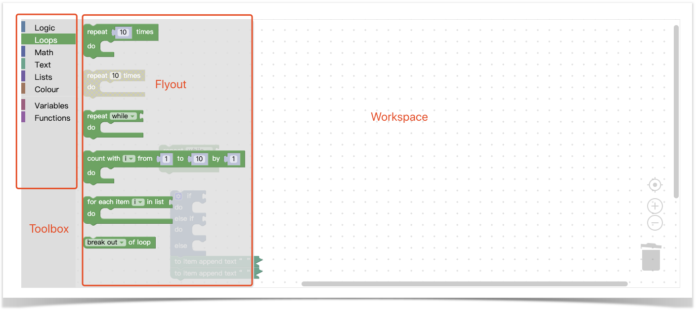
技术介绍：
blockly90%的视觉技术以svg为主，包括代码块、滚动条等。小部分使用html，如toolbox、代码块入参的输入框（数字、颜色等）。
运行原理：
blockly的代码块本身是无法运行的，想要运行代码块需要定义每种代码块对应生成的javascript代码，再使用eval来执行Generating and Running Javascript（需要科学上网）。当然这只是运行代码块的方式之一，比如scratch就没有依赖代码生成，通过blockly派发的事件，生成了AST。后续的文章中我们会展开讲scratch的运行原理。
接下来，我们一步一步来，看blockly葫芦里卖的什么药。
Toolbox和Flyout的创建
一切从toolbox说起
toolbox字段是在创建整个blockly时需要传入的一个参数，它是一个字符串，一个xml格式的字符串，它描述了代码块如何在flyout区布局，就像我们写html一样，当然它只能大致描述顺序、分类、主题等，最终布局由配置决定。下面是一个toolbox的示例。详细描述看这里–toolbox
1 | <xml xmlns="https://developers.google.com/blockly/xml" id="toolbox-categories" style="display: none"> |
Toolbox的创建
toolbox直白点说就是“分类栏”（blockly可以直接在toolbox中放置代码块，但是由于一般情况代码块较多，我们默认以有分类栏为例），它可以创建递归的树形菜单。blockly将传入的toolbox使用DOMParser解析为XMLElement对象，对DOM树进行递归查找，tagName为CATEGORY的标签解析为大分类，将SEP解析为代码块或分类之间的分割线，将BLOCK、SHADOW、LABEL和BUTTON等解析为当前分类下的元素（查看代码），并将这些解析到的dom节点缓存到当前对应的分类的下。
我们之前说了，blockly部分UI是html元素编写的，这里的toolbox就是这样。所以为了“偷懒”，blockly直接使用了goog.ui.tree.TreeControl（查看代码）这个库来创建toolbox，它来自closure-library，这是一个上古时期的库，这里不太建议去太深入研究它。
触发点击事件，实时创建Blocks
接下来就是点击toolbox，创建每个代码块并展示flyout的过程了。
block标签的解析
在研究Block的创建之前我们先对每个标签进行解释：
block
block从字面也可以理解到它的作用，他就是一个可拖动的最小单位——代码块
value/statement（value和statement具有同样的效果）
value应放置于block标签内，它是顺序无关的，通过标签上的“name”属性与该代码块的具体配置（后面会讲具体的块声明，声明描述了块的具体UI，颜色图标文字等等）对应上。
value标签更像是某个代码块的某个输入的默认值。怎么理解这个输入呢，相信看过前面scratch抽象语法树的同学会知道，这里就不再赘述了，点击这里直接传送到input解释。有了value还不行，如果value标签内是空的你可能会看到这样的效果：
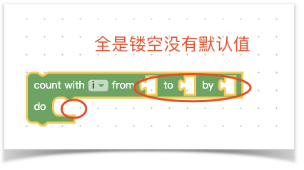
如果你想要给它一个默认值就需要shadow标签了，shadow标签描述了一个绝对的默认值，它是一个不可被拖动的块。
当我们给上面代码块每个value都声明了一个shadow标签，类似下面这样的xml代码：
1 | <block type="controls_for"> |
于是我们得到下面的结果：
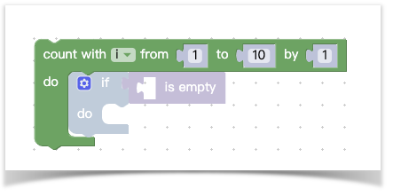
第一个输入变量它是一个规定好的枚举类型几乎不可变我们先不管，后面三个输入在我们声明了shadow和filed后产生了一个默认值，这里需要说明下field的name属性，它定义了这个输入的类型，除了NUM之外还有其他内置的field类型（这里有其他内置类型）。接下来你看到连do里面也能有一个默认的块，那是不是可以递归下去写一个超大的代码块呢，答案是肯定的，我们来看看定义足够多的代码块将出现什么样的反应：
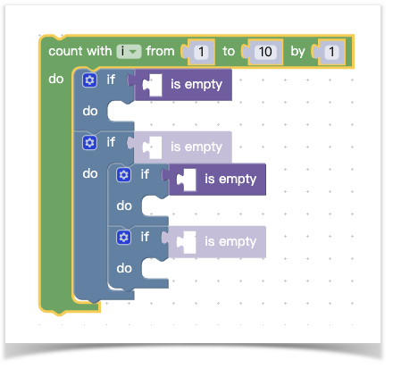
来看看代码长啥样：
1 | <block type="controls_for"> |
神奇的next标签用来描述当前块的下一个连接块，这样我们就可以无限创造下去，是不是现在觉得，blockly创造了一个xml解析器，把xml解析为了代码块，就像html解析为了网页。
解析细节我相信你也不想错过，查看源码
块的声明
官方文档
看完blockly自定义解析器，我相信你还有很多疑问，比如block和shadow中的type如何定义的，value中的name又是如何找到的，下面我们一起来康康一个块是如何被定义的。
官方提供了两种声明块的方式，一个是通过js对象（官方称为json定义），另一个是通过jsapi定义。
通过json定义
我们先来看看下面这样一个代码块的json声明是什么样的:
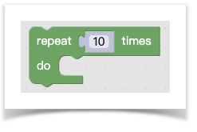
下面是json声明，如果你对blockly的字段非常清楚或对它的工作方式非常了解可以跳过这一节。
1 | { |
- type：定义了代码块的id，把它理解为id更加合适，它是全局唯一的。定义xml时，block标签的type就是通过它找到配置的；
- message：message被定义为一组输入，第零组为message0，第一组为message1……等，需要注意的是，必须是连续的。message包含了展示在代码块上的文本和该组内的输入，比如下拉框，默认值，代码块输入等，比如：，它就包含了一个“not”文本和一个代码块输入，message可以是“not %1”。上面代码中%{BKY_XXXX}和%1这样的声明是blockly的模版语法，前者是描述代码块内的描述文本的占位符通过Blockly.Msg能够找到所有的声明（scratch似乎没有使用这一套Blockly.Msg，里面没有内容），使用占位符很明显是为了国际化设计的。后者%数字是对应的message字段的下标对应的args数组的下标，巧了，它是又是从1开始的（真是看不懂这样的魔鬼设计）。；
- args：args的定义规则和message是类似的，message中的 %数字需要找到args中对应的对象，args中的对象是对该输入的详细描述；
关于通过json定义的字段的解释，还是建议看官网的描述会更加详细（define-blocks）。
通过jsapi定义
请参考官网文档define-blocks。
创建Blocks
看到这里你可能已经耐不住性子了：怎么还没开始创建块！别急，我们这就开始。
拿到对应分类的blocks数组
我们之前讲到，在解析xml时只会解析到category，其他的类型比如block都会直接以dom的形式缓存到对应分类对象的数组里。那么在接下来的在点击分类栏的时候，会拿到对应分类的blocks数组
解析json
这一步只有通过json配置的代码块才有。通过json配置的代码块首先会调用 jsonInit 方法，然后从[message]和[args]字段开始解析，举个例子：
还是以repeat代码块为例：
1 |
|
%{BKY_CONTROLS_REPEAT_TITLE} 被解析为 repeat %1 times，然后再被拆解成这样一个数组：
1 | ['repeat ', 1, ' times'] |
如果是数字，会从args0中找到第0（1 - 1）项，替换，再将字符串trim，最后得到
1 | [ |
这里有一个特殊逻——当数组最后一个对象为字符串或者最后一项的type为fields_开头，会自动在数组末端添加一个对象{ type: ‘input_dummy’ }，官方描述为“虚拟输入，类似换行符的效果”。
注：虚拟输入理解为换行没毛病，但是我觉得理解为“截断”会更加贴切。为什么这么说呢，当某个代码块被作为默认输入给另外一个代码块时（参考前面的递归解析xml），这里是没有换行的，而是这个代码块本身结束了，截断了，因为他就是一个表达式，没有后续的输入了。
于是上面的代码就变成了：
1 | [ |
于是接下来又是一个遍历的过程：
将对象类型前的所有字符串作为field添加到该对象中，如：
“repeat”给了name为TIMES的input_value，“times”给了input_dummy。当然中途还有对args内的其他对象做处理，如：check、align等等，前者是检查输入的类型，后者是布局用的。
这里还有一个不得不提的是，有些块是有输出的，比如一个像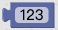这样的代码块，那它的输出应被声明为Number。
json的解析我们暂时就到这里，感兴趣的可以阅读源码（查看源码）。
绘制block
接下来就是绘制block了，blockly将block的绘制分成了两步：
- 创建整个块的svg结构。如：代码块形状的path标签，代码块的阴影，代码块的高光（是的，还有高光。scratch毅然抛弃这俩玩意儿，做的扁平化风格代码块），fields，如果有注释会添加注释的按钮，有设置还会添加设置按钮的扩展，类似这样 。
- 然后是正式的开始绘制，绘制都是以path标签为基础，对它的d属性进行填充，好奇svg的path是如何使用的同学可以看这里；
正式通过块产生path数据之前，会有一个计算的过程（查看源码），源码注释解释为：计算每一行中字段产生的高度和宽度，这个过程同时也会计算出每个文本在代码块中的位置。
绘制过程像是一个线段拼接的过程，blockly主要分成了四个大步骤来绘制一个代码块，上、又，下、左，我们来看看每个阶段绘制完成后是什么样的：
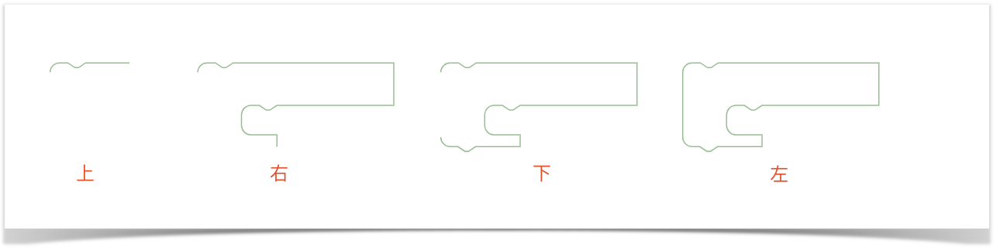
上：
上面部分的绘制主要是看这个代码块是否可以有上一个声明，除了表达式和事件类型的代码块都可以有上个声明；
右：
右侧部分绘制是最复杂的，首先要计算出这行（比如json解析中提到的message0）上所有的输入（input，如果代码中有默认的field值，还会去把field的宽度算上，比如你的field是number类型，并且值比较大的话就会占据较宽的位置）加起来的宽度和高度，以使代码块继续往右侧延伸。然后是遍历这个块所有的input以计算出右侧的线条，拿上面的代码块举例，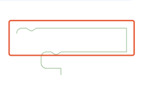块的红框部分为一行，结尾没有扩展输入在计算完宽度后画笔直接往下走，绘制成这个样子：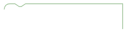，继续走，因为该块有input_statement，所以它继续绘制，于是你看到了上图中“右”那个阶段的状态。
下：
下部的绘制也是相对简单的，逻辑则是判断该类型的块是否可以有nextStatement，如果有就会有一个小凸起。
左：
左侧部分相对来说也比较简单，如果该块被声明为一个有output的块，那左侧会有一个可连接的标识，像这样：。
不得不提的是，代码块的风格大部分由path标签决定的，里面的一些共通的地方（比如一些凸起和凹陷）都被声明成了常量，修改常量就能够达到修改整体风格的目的，比如我们修改prevStatement和nextStatement的那个凹陷和凸起对应的常量后，会得到一个类似scratch风格的代码块：
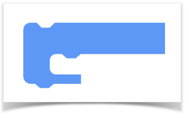
Flyout拖动创建代码块
拖动创建代码块的过程实际上是一个非常简单的过程，在上一章中我们了解了如何创建一个block，生成了想要的svg结构，在拖动的时候就是把已有的svg结构（包括了path标签的d属性）复制放置到一个新的拖拽容器中，同时会把svg结构（只保留了结构，因没有实际的绘制，会在拖拽释放时再去绘制）放到工作区中隐藏起来，然后根据鼠标的移动从而去改变这个容器的位置实现了拖拽的效果。
那在拖拽着移动鼠标的过程会一直侦测沿途中是否有可以连接/包裹的代码块，一旦符合连接条件，即可对目标位置进行高亮处理，这也是接下来一章要给大家分享的内容。
代码块的连接与移动
刚刚我们简单说了下拖拽时创建block，其实在已在workspace中创建的block的拖动和在flyout中的拖动是一样的。当我们把代码块拖动到邻近的代码块时，如果类型匹配，就会出现一个预览效果如下图灰色的部分：
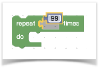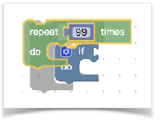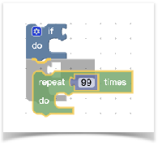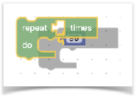
你会发现blockly的拖动是如此的灵活，那它是如何实现的呢？
connection
在讲解拖拽之前，首先要了解blockly中的connection概念(https://github.com/google/blockly/blob/master/core/rendered_connection.js)，它用于描述块与块之间的连接，是对blocks之间关系的一种抽象描述。它提供一些方法来处理连接逻辑，每个块的连接的接口（如previousConnection属性）都是这个类的实例。如果一定要打一个比喻的话，我觉得它和js的原型链有点像，但是原型链是1对1的关系，而connection是多对多的关系，因为它们都有多个口子供你建立和其他块的关系。所以你可以根据connection的描述来还原代码块之间的关系，那么代码块之间若要关联起来那必将涉及到connection。我们来看下面这组块的connection关系：
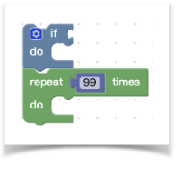
上面两个代码块都有previousConnection和nextConnection，现在放置的状态应为：蓝色代码块的nextConnection指向了绿色代码块的previousConnection，而绿色则相反，previousConnection指向了蓝色的nextConnection，当然实际代码肯定不是简单赋值就完成了，它还有一些复杂的判断逻辑，感兴趣的话点 这里。
开始拖动
在摁住代码块（也可能是一组）开始拖动前，blockly会做一件准备工作，就是收集拖动的代码块的顶部块的所有能够被连接的地方，如：outputConnection、previousConnection、nextConnection和所有的input(在第一节的解析json处有解释)，这里blockly考虑到拖动一组代码块的时候，能够让最下面的代码块的nextConnection也能生效，所以还收集了底部块的nextConnection（查看源码）。如果你没有看懂我的描述可以看下图示意：
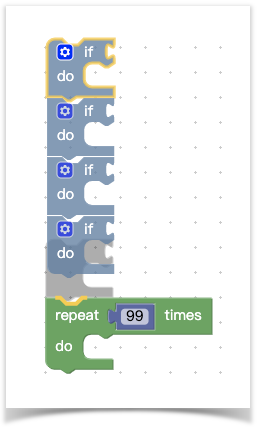
收集好connections那么下一步就是遍历这些connections，为它们寻找归宿。注意，下面的行为都是在鼠标拖住块不停的移动中的。
寻找最近的可连接的目标
在哪里寻找呢，在connectionDB中寻找，connectionDB（查看源码）将整个workspace的connection分成了四类outputConnection、previousConnection、nextConnection和inputConnection，如果你当前是一个previousConnection，那肯定要寻找相反的类型nextConnection，outputConnection同理。
半径常量（radius）——这里要提一嘴的是在寻找过程中一直有一个叫半径的东西，一句话解释就是【触发判断两个块是否真的可以connect的阈值】
如果我们按照常规的思路去寻找最近的候选目标，那可能就是遍历对应的相反类型的x和y轴，在一定范围内就满足条件。但是随着代码块越来越多，计算会越来越多。blockly通过二分查找法找到当前connection在目标connection数组（这些connection都是按y轴升序排列，所以可以使用二分查找算法）中的位置（查看源码）（注：blockly只在y轴上查找，应该是考虑到计算量和实现的问题）。
可能这里你看不太懂，举个栗子，有一个数组[10, 20, 30]，里面的数字代表connection的y坐标，然后这里有一个connection它的y坐标是15，那它的这个位置应该是1。
有了这个位置索引，能够极大的减少查找的范围，再通过刚才提到半径常量的限制，那么blockly就只会在半径常量规定的这个小范围的y轴范围内来回查找（经过我的尝试，确实只满足y轴就会触发复杂的connect check，但是这相对全盘遍历减少很多工作了）。
若在这个阶段匹配到了一个合适的connection（查看源码），将会展示展示预览状态，移开将会删除预览，鼠标一旦在预览阶段释放，blockly则认为用户确认了这个连接，将为调用connect方法进行真正的连接（查看源码，和实际连接的地方），此时也会触发块的render函数重新计算整个快的布局。至此，整个blockly的块的连接大致就是这样的流程。
扩展——增加候选connection个数
上面我们提到，在开始拖动时会收集顶部代码块所有能被连接的地方，还会收集底部的nextConnection，那我们可不可以再增加一点呢，比如把底部的所有能被连接的地方都拿到，我们先看看改动前的效果：
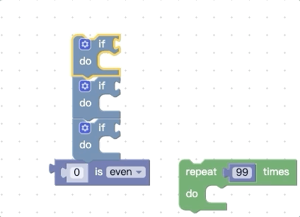
我们再看看改动源码进行扩展后的效果：
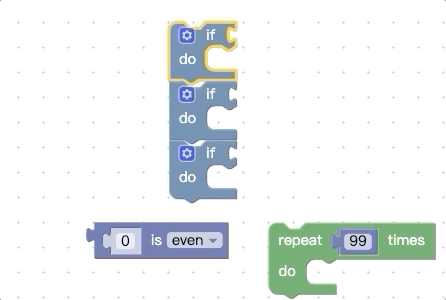
你会发现被拖动的代码块组能够被触发connect预览的地方更多了。
改动很简单，因为我们读懂的它的代码，只需要修改 收集connection的地方，将：
1 | available.push(lastOnStack); |
我们在这里把最后一个代码块的所有connection都收集，甚至，你可以把拖动的块组里的所有块，及其子块的connection都收集到。
生成可执行的代码
代码块最终肯定是要运行看效果的，单纯的代码块肯定是无法运行的，blockly采用了block to scripts的方式使代码块运行起来。
什么是block to scripts呢，blockly的最小单位是block，就是我们可见的块，包括了不可拖动的shadow块，每个块需要定义对应生成脚本的函数。
举个blockly已有的JavaScript脚本生成的例子，先看代码块长啥样：
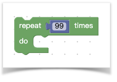
上述代码块生成的代码长这样：
1 | for (var count = 0; count < 99; count++) { |
上述代码生成需要三步：
- 获取输入次数；
- 获取input_statement对应的代码；
- 拼接脚本并返回。
下面是伪代码：
1 | Blockly.JavaScript['controls_repeat_ext'] = function(block) { |
整套blockly的代码几乎都是这样，每个代码块对应一个脚本的生成逻辑，在生成逻辑内拿到用户的输入，再拼接脚本返回。
关于脚本的生成，我们简单了解到这里，scratch没有使用这一套东西，相较于blockly的原生方案，scratch选择了自己去维护一个runtime——scratch-vm，通过blockly提供的事件生成blocks的抽象描述——AST，使用VM的概念去将执行代码块。